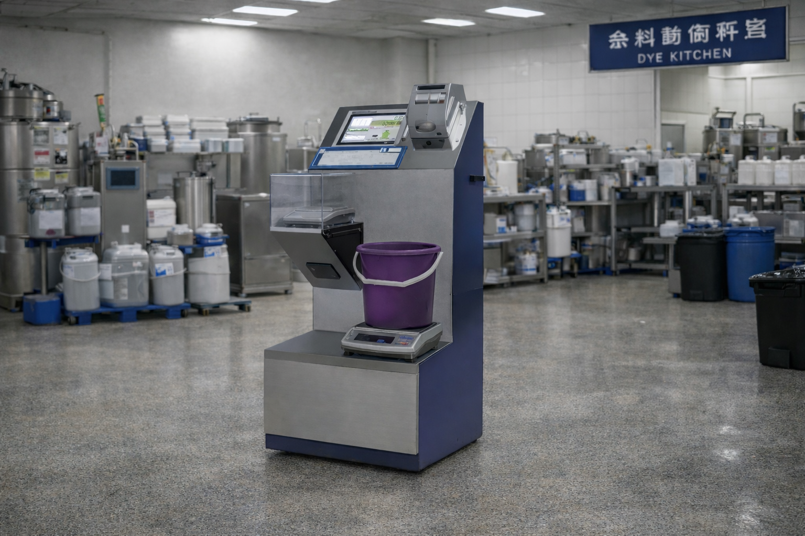
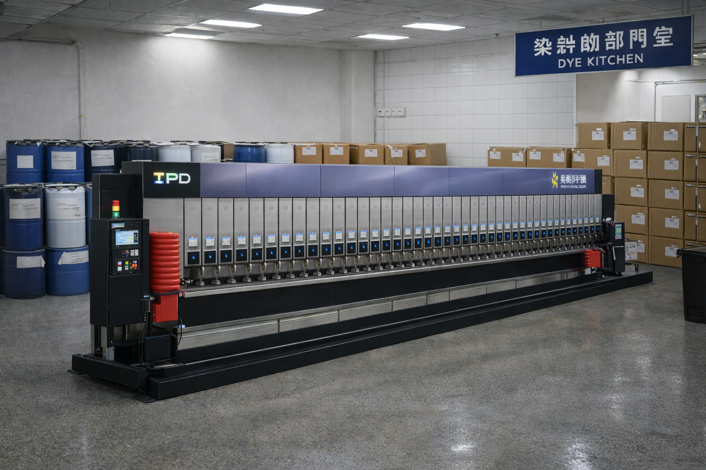
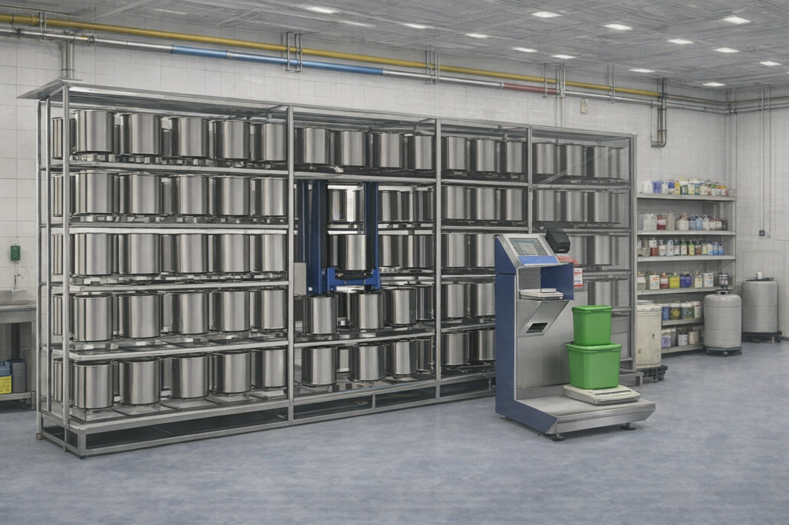
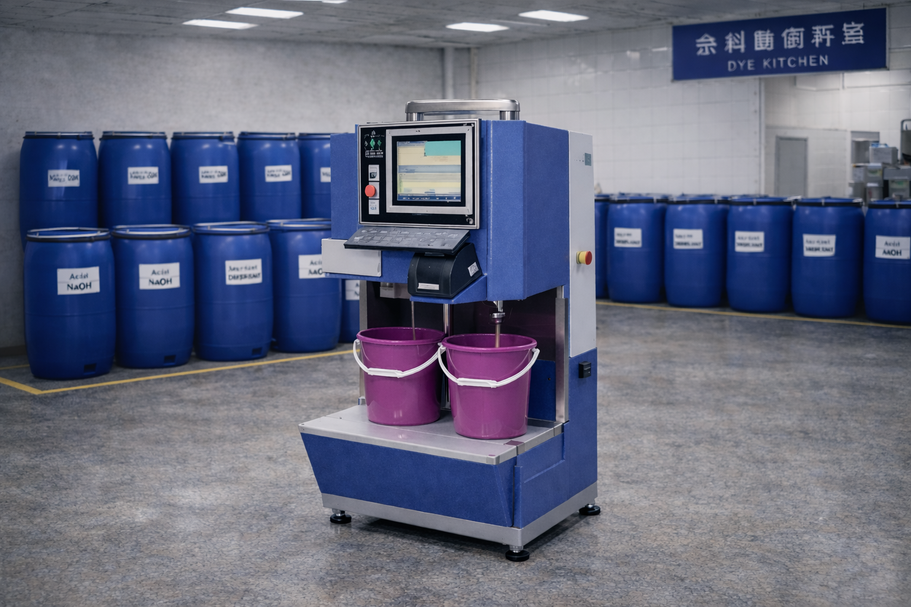
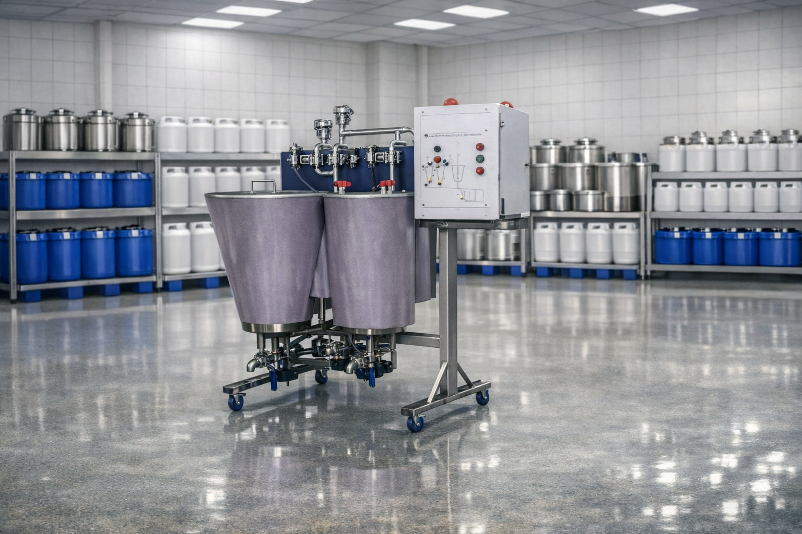
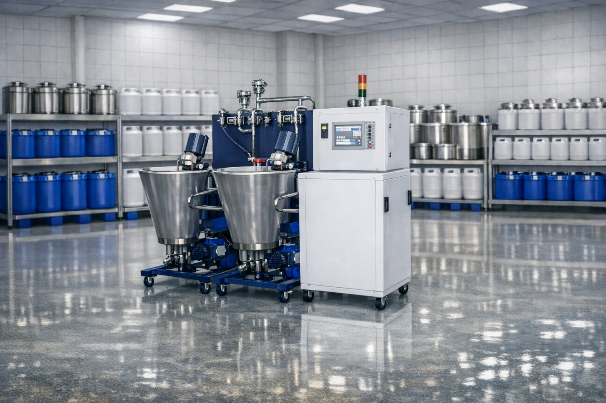
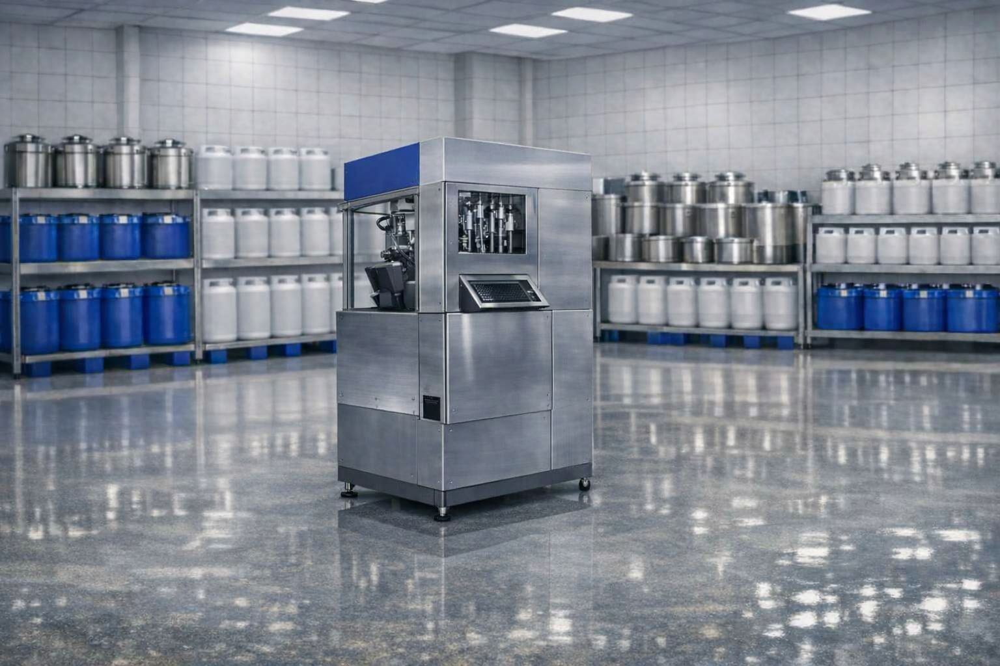
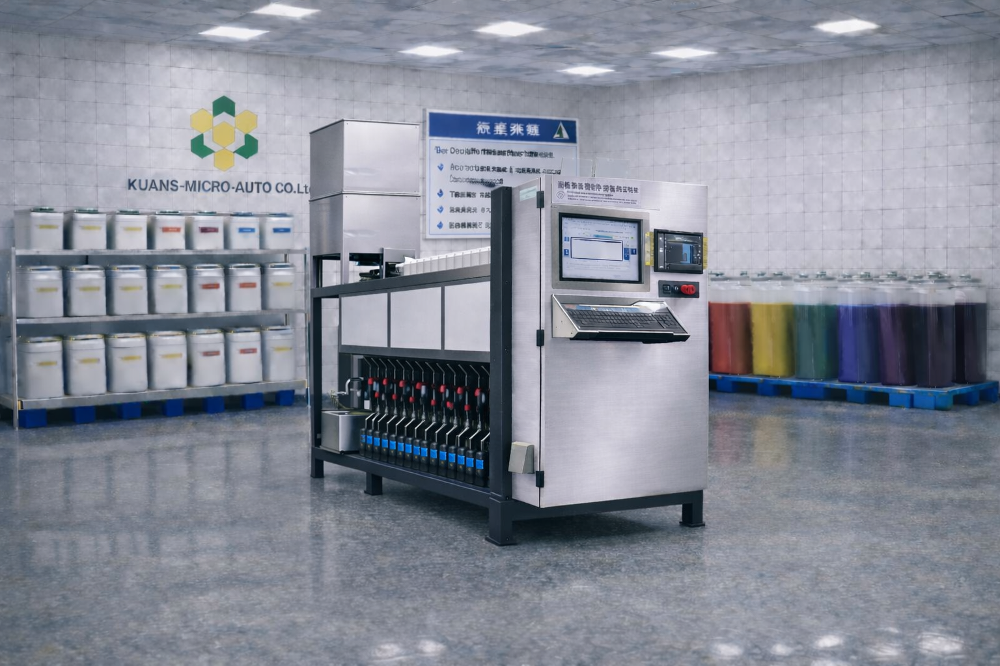
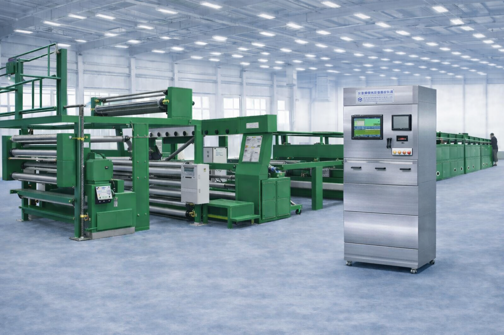
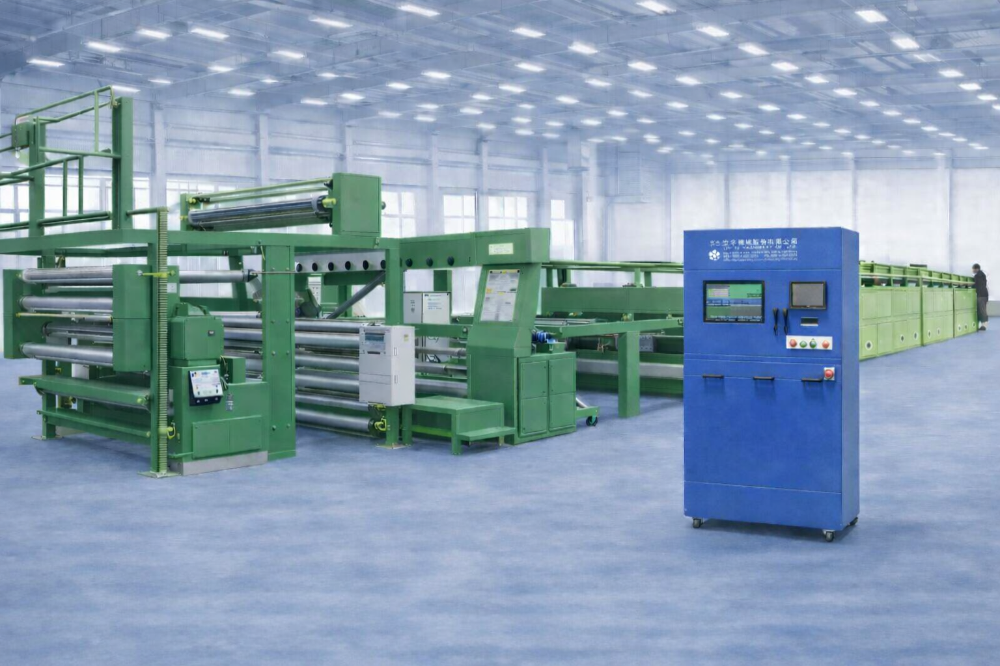

40年染整經驗 × AI智慧分析 × 即時監視

結合電子秤重與電腦管理之半自動秤料設備， 提供染料配方指示與精準秤量控制， 有效降低人工誤差並提升染色品質穩定性。

專為粉體染料與顏料設計之全自動計量系統， 採用密閉式儲存與高精度計量控制， 有效解決粉塵污染、人工誤差與秤料效率問題， 提升染整製程品質與自動化程度。

整合染料自動倉儲、取料與半自動秤料之智慧系統， 採用立體倉儲與自動搬運技術， 實現染料快速存取、精準管理與秤料作業一體化， 提升染整工廠之效率、品質與管理能力。

專為染整製程中各類液體助劑之計量與調配設計， 結合自動輸送、精準計量與電腦控制技術， 有效解決人工配料誤差、效率低與浪費問題， 提升製程穩定性與整體生產品質。

適用於染料混合、攪拌與均質處理， 可整合於 Dye Kitchen 或智慧染整產線， 提供穩定且高一致性的製程控制。

結合染料溶解、計量與多機分配輸送之整合設備， 適用於 Dye Kitchen 與自動化染整產線， 大幅提升溶解效率與輸送穩定性。

專為染整製程設計之助劑自動計量與輸送設備， 結合高精度計量與全自動輸送控制， 提升作業效率並確保製程品質穩定。

升級型助劑自動計量系統，支援多點供應與集中控制， 適用大型染整廠多機台同步作業， 實現高效率與高一致性的智慧製程。

專為定型機與樹脂加工製程設計之全自動調液系統， 整合計量、混合、輸送與控制功能， 有效解決人工調液誤差與品質不穩問題。

適用於單台定型機之樹脂調液自動化設備， 提供穩定、精準的調液控制， 有效改善人工操作誤差與品質不穩定問題。
若您對智慧染整系統或設備有任何需求，歡迎與我們聯繫
KUANS MICRO-AUTO CO., LTD.
+886-3-3672980
FAX：+886-3-3672982